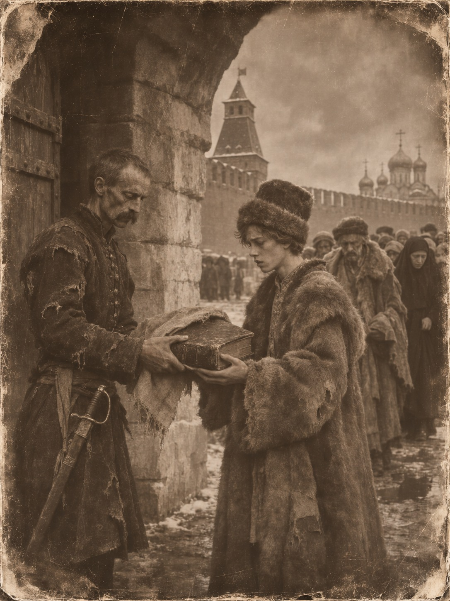

Руское письмо

Мстиславль, июля 10 дня по нашему счёту, а по латинскому 20-го, года 1654
Внуку моему Тодору, когда вырастет и научится читать не по складам.
Пишу тебе, потому что под городом стоит князь Алексей Никитич Трубецкой с царским войском, и говорят, что замок наш не удержать. Отец твой ушёл на стену, мать увезла тебя к родне под Кричев, а я стар, чтобы бежать, и слишком упрям, чтобы прятаться в погребе. Мне за семьдесят. В такие годы человек уже не воюет, зато может наконец рассказать то, о чём молчал сорок лет.
Ты знаешь, что я ходил на Москву. Ты не знаешь, зачем.
I
Отец мой, Данила Ходыка, был мстиславский земянин, то есть мелкий шляхтич, у которого земли ровно столько, чтобы прокормить семью и коня для войны. Он был православный, как и все наши, и учил меня грамоте не по часослову, а по Скорининой Библии, напечатанной ещё в Праге. Старая была книга, с обтрёпанными углами. На первом листе доктор Франциск Скорина написал, что переложил Писание «людем посполитым к доброму научению», и отец всегда читал эту строку вслух, медленно, как молитву. Посполитые люди — это все: и пан, и мещанин, и мужик. Отец считал, что в этой строке вся наша вера и вся наша держава.
Держава наша называлась Великое княжество Литовское, Руское и Жемойтское, и слово «Руское» стояло в этом имени не для красоты. Мы и были Русь. Наши летописи писались по-руски, суды судили по-руски, а когда в восемьдесят восьмом году подканцлер Лев Сапега издал третий Статут, наш свод законов, он напечатал его руским письмом. Сапега в предисловии написал, что стыдно народу не знать своего права, тем более что писано оно не чужим языком, а своим. Статут велел писарю в земском суде вести дела только по-руски и только рускими буквами, а на уряды не брать ни чужеземцев, ни соседей, ни поляков, ни московитов, одних своих.
Отец купил тот Статут, когда я был отроком, и заставил меня читать его по вечерам, раздел за разделом. Я ненавидел эти вечера. Мне хотелось на речку. Но к шестнадцати годам я знал, как делят наследство, какая кара за наезд на чужой двор и что даже великий князь, когда его выбирают, клянётся держать наши права и вольности. А раз клянётся, то и сам под правом ходит.
О Москве отец говорил мало и неохотно. Говорил, что там тоже Русь, только украденная. Что двести лет назад они платили выход в Орду, возили ханам серебро и ездили в Сарай за ярлыками, а мы в это время били татар на Синих Водах. Что Орда давно развалилась, а в Москве её никто не заметил, потому что она там не снаружи, а внутри. Я тогда не понимал, что это значит.
Ещё отец рассказывал про Ивана Фёдорова, московского друкаря. Тот напечатал в Москве «Апостол», первую их книгу, но вскоре его обвинили в ересях, и он бежал к нам. В Заблудове его приютил пан Григорий Ходкевич, и там Фёдоров печатал Евангелие. «Запомни, — говорил отец. — Книга бежит из Москвы к нам, а не от нас в Москву».
Запомни и ты, Тодор. Через много лет я встречу одного из Ходкевичей под Москвой, и это будет совсем не в радость.
II
В десятом году, после того как гетман Жолкевский разбил московитов под Клушином, московские бояре сами позвали на царство нашего королевича Владислава. Бояр было семь, у них это так и звалось — семибоярщина. Они подписали договор, Жолкевский ввёл войска в Москву, и я пошёл туда товарищем в литовской хоругви. Товарищ, если ты забыл, — это шляхтич, который служит в хоругви конно, со своими почтовыми слугами и своим добром, а не за одно жалованье. Позже нашим полком командовал пан Иосиф Будило, такой же литвин, как я.
Я шёл в Москву с лёгким сердцем. Мне было под тридцать, я был глуп и думал, что иду к братьям. Что королевич сядет на трон, московиты получат свой Статут, свои сеймики, своё руское право, и обе Руси наконец срастутся, как срастается сломанная кость.
Первую трещину я увидел в Посольском приказе, куда меня послали отнести бумаги. Там сидел подьячий, мужчина с бородой до пояса и седыми висками. Звали его Офонасий, но подписывался он «Офонька». Он писал челобитную на государево имя, и я, от скуки, заглянул ему через плечо. Челобитная начиналась словами: «Государю царю бьёт челом холоп твой Офонька».
— Пан пишет «холоп», — сказал я. — А пан разве холоп?
Он не понял вопроса. Я объяснил, что холоп — это невольник, которого можно продать, и что у нас так себя называет только тот, кто и вправду продан. Шляхтич пишет королю «верный подданный», мещанин тоже, и никто не уменьшает своё имя, как будто он дитя или собака.
— У нас все холопы государевы, — сказал Офонасий спокойно, как говорят, что вода мокрая. — И бояре так пишут. Князь Мстиславский пишет «холоп твой Федька». Так положено.
Я рассказал ему про Статут. На другой день принёс книгу, и мы читали её вместе, при свече, когда приказ опустел. Мы с ним говорили почти одним языком: я по-своему, он по-своему, и через неделю перестали замечать разницу. Он водил пальцем по строкам и шевелил губами. Больше всего его поразило не то, что написано, а то, что это вообще напечатано. Что любой шляхтич может купить закон за деньги и прочитать дома, и спорить в суде с паном, и сослаться на раздел и артикул.
— У нас Судебник есть, — сказал он. — Только он в приказе лежит. Кто ж его даст в руки.
От Офонасия я узнал многое. Что деньги у них зовутся «деньга» по-татарски, казна — по-татарски, ямская гоньба, где на каждой станции меняют коней, устроена по-ордынски и зовётся по-ордынски «ям», а пошлину с товара берут «тамгой» и платят в таможне. Что «кабала», долговая грамота, по которой человек становится холопом, тоже слово татарское. Он не считал это стыдным. Он просто перечислял, как перечисляют родню.
А однажды он рассказал мне про Симеона.
В семьдесят пятом году, когда Офонасий был молод, царь Иван Васильевич, которого московиты зовут Грозным, вдруг сошёл с престола. Вместо себя он посадил на трон касимовского хана Саин-Булата, прямого потомка Чингисхана. Хана крестили, назвали Симеоном Бекбулатовичем и венчали в Успенском соборе «великим князем всея Руси». А сам царь назвался Иванцом Московским и писал этому хану челобитные, подписываясь «Иванец Васильев с детишками». Год почти так продолжалось, потом царь передумал, и хана отправили в Тверь.
— И никто не смеялся? — спросил я.
— Чего смеяться, — удивился Офонасий. — Он же Чингисова рода. Царского. Тогда многие говорили, что по крови он и повыше нашего будет.
Симеон, кстати, был ещё жив, когда я сидел в Москве. Говорили, что он ослеп; его постригли в монахи, и он доживал век где-то в северном монастыре под именем Стефан. Я думал о нём ночами. О том, что московский царь, желая напугать своих бояр, не придумал ничего страшнее, чем снова поставить над ними хана. И бояре испугались, потому что поверили.
Вот тогда я понял, что значили отцовы слова. Орда в Москве не снаружи, а внутри.
III
Тодор, я не хочу, чтобы ты думал, будто мы пришли туда ангелами. Мы не были ангелами.
Наши паны вели себя в Москве как в захваченном городе. Пили, брали чужое, задирали баб. Один пьяный жолнер выстрелил в икону над Никольскими воротами, и этого ему московиты не простили бы никогда, даже если бы забыли всё остальное. В одиннадцатом году, в Страстную неделю, Москва поднялась на нас, и тогда наши подожгли город, чтобы выкурить восставших из улиц. Горело два дня. Я стоял на кремлёвской стене и видел, как огонь идёт по деревянным кварталам, где жили посполитые люди, к которым доктор Скорина обращал свою книгу. Сгорело всё, что не было каменным.
Я никого не поджигал. Но я стоял на стене с теми, кто поджигал, и не ушёл. Это одно и то же, только мельче.
Офонасий в том пожаре пропал. Я искал его потом и не нашёл.
Мне тогда впервые пришло в голову, что Русь — это не земля и не кровь, а то, как люди живут друг с другом. И что Русь, которая жжёт город, чтобы удержать его, ничем не лучше Орды, которая собирает с него выход. Я гнал эту мысль. Мне было удобнее думать, что мы правы, а они дикари.
IV
Потом нас осадили. Сперва казаки князя Дмитрия Трубецкого, потом подошло ополчение из Нижнего, которое вели мясной торговец Кузьма Минин и князь Дмитрий Пожарский. Гетман Ходкевич, литовский гетман, из того самого рода, что приютил когда-то друкаря Фёдорова, шёл к нам на выручку с обозом хлеба. В конце августа по нашему счёту, а по латинскому в начале сентября, он три дня бился у Новодевичьего монастыря и в Замоскворечье. Мы смотрели со стен, как он прорывается, и я видел возы, может быть в двух верстах от нас, может быть ближе. Потом московиты отбили возы, и гетман ушёл.
После этого начался голод.
Я не стану писать тебе всё, что видел. Ты ещё мал, а когда вырастешь, может быть, тебе попадутся записки пана Будилы: он, говорят, всё записывал. Скажу только, что сперва съели коней, потом траву, корни и мышей, потом сапожную кожу и пояса. Потом стали варить пергамент.
В Кремле было много церковных книг, писанных на телячьей коже. Наши ходили по соборам и ризницам, сдирали с книг оклады, а листы резали и варили, пока кожа не размякнет. Это был бульон из Евангелия, Тодор. Я видел, как товарищ мой, пан Война, жевал лист, на котором ещё можно было прочесть киноварную букву. Он плакал и жевал.
Мой Статут был напечатан на бумаге. Бумагу не сваришь, она расползается в кашу. Но переплёт у него был кожаный, хороший, отцовский, и однажды ночью я поймал себя на том, что отдираю этот переплёт ногтями. Я остановился. Обмотал книгу тряпкой и спрятал на груди под жупаном, и больше не доставал.
В те дни в Кремле, кроме нас, сидели московские бояре, те самые, что звали Владислава. С ними были жёны и дети. Среди них жила инокиня Марфа, мать нынешнего московского царя, а тогда просто вдова при живом муже: муж её, Филарет, был у нас в Литве пленником, и она его не видела уже два года. При ней был сын, мальчик лет шестнадцати, длинный и бледный. Звали его Михаил.
Я сторожил у Чудова монастыря и часто видел, как он сидит на ступенях, закутавшись. Однажды он спросил, что у меня за пазухой, раз я всё время держу там руку. Я показал. Он долго смотрел на титульный лист.
— По-нашему писано, — сказал он. — А слова не наши.
— Наши, — сказал я. — Это ваши забыли.
Он не обиделся. Он стал приходить. Мы читали Статут вдвоём, как когда-то с Офонасием, и я опять видел, как человек водит пальцем по строкам и шевелит губами. Ему нравились те места, где сказано, что никого нельзя казнить, не осудив, и что судья, который судит неправо, сам за это отвечает. Он спросил, правда ли у нас так делают. Я сказал, что не всегда. Что паны тоже бывают сволочи и тоже, бывает, наезжают на соседей с оружием. Но у нас хотя бы есть бумага, на которой написано, что так нельзя, и эту бумагу можно показать в суде.
— А у нас бумаги нет, — сказал Михаил. — У нас государь.
Ему было шестнадцать, и он ещё не знал, что сам станет государем.
V
Двадцать второго октября по нашему счёту, а по латинскому первого ноября, московиты взяли Китай-город и внесли туда икону Казанской Богородицы. На другой день в Кремле стали говорить о сдаче. Мы просили только одного: чтобы нас приняли люди Пожарского, а не Трубецкого. Казаков мы боялись больше, чем голода.
Двадцать шестого выпустили бояр с семьями. Я стоял в карауле у Троицких ворот, когда они шли мимо, худые, в шубах, которые висели на них, как на кольях. Шла инокиня Марфа, а за ней Михаил.
Я вынул Статут из-за пазухи, размотал тряпку и сунул ему в руки.
— Зачем? — спросил он.
— Чтобы не съели, — сказал я.
Это была правда, но не вся. Всей правды я и сам тогда не знал. Мне казалось, что если книга уйдёт в Москву, то какая-то часть нашей Руси уйдёт туда вместе с ней. Не войском и не королевичем, а вот так, тихо, как ушёл когда-то Фёдоров, только в обратную сторону.
Он взял книгу и пошёл за матерью. Больше я его не видел.
На другой день мы сдались. Пожарский слово сдержал: тех, кто достался ему, не тронули. Я с полком пана Будилы попал в Нижний Новгород. Сказывали, что нижегородцы, у которых мы сожгли в Москве родных, хотели ночью перетопить нас всех в Волге, и что их отговорили. Я в это верю. Я бы на их месте тоже хотел.
Шесть лет я просидел в плену. Когда в девятнадцатом году на речке Поляновке меняли пленных, нас отдали за Филарета, отца того самого мальчика. Он ехал в Москву, а мы домой, и у переправы мы разминулись. Я видел старика в возке, высохшего, с белой бородой. Сын его к тому времени был уже шесть лет московским царём.
VI
Теперь слушай, зачем я тебе всё это пишу.
Пять лет назад, в сорок девятом году, сын Михаила, царь Алексей Михайлович, собрал в Москве Земский собор и велел составить новый свод законов. Его назвали Соборным уложением и напечатали, представь себе, больше чем в тысяче книг. Наш виленский купец, который ездит в Москву за пушниной, привёз мне книгу, и я читал её две недели. Тодор, они переписали туда целые куски из нашего Статута. Про суд, про наезды, про холопов, про многое другое. Иногда почти слово в слово, только руское письмо поправили на московский лад.
Я не знаю, была ли это моя книга. Может быть, у них в Посольском приказе давно лежал свой Статут, а может быть, его переводили с польского. Скорее всего, моя книга сгнила где-нибудь в царском сундуке или её сжёг какой-нибудь дьяк. Но я старик, и мне позволено думать, что это она.
В тот же год, говорил купец, царь велел праздновать по всей своей земле двадцать второе октября, день Казанской иконы. Тот самый день, когда нас вышибли из Китай-города. Так они теперь празднуют то, что выгнали Литву. А в своё Уложение кладут литовское право. И ни у кого там это не вызывает смеха, как не вызывал смеха хан Симеон на московском троне.
Я долго думал, кто кого победил в двенадцатом году. Мы проиграли. Это ясно. Москва осталась Москвой, ханский ярлык теперь висит не в Сарае, а в Кремле, и подписываются там по-прежнему «холоп твой». Но книга прошла в те ворота, которые не взял гетман Ходкевич. Значит, та Русь, которую я нёс за пазухой, всё-таки дошла.
А теперь слушай, что из этого вышло.
Пятого дня мне сказали, кто ведёт войско под Мстиславль. Князь Трубецкой, родич того Трубецкого, чьих казаков мы боялись в Кремле. Трубецкие, Тодор, — Гедиминовичи. Их предок был литовским князем, сыном Ольгерда, и сидел в Трубчевске, на нашей земле. Давно, ещё при прадедах наших, они ушли служить Москве. И вот литовская кровь идёт брать литовский город под московским знаменем, а в обозе у неё, может быть, лежит Уложение, списанное с нашего Статута.
Я не знаю, что это значит. Может быть, Орда снова проглотила нашу книгу, как мы в Кремле глотали пергамент: изжевала, высосала, что можно, и пошла дальше. А может быть, книга, однажды проглоченная, остаётся внутри и потихоньку делает своё дело, и через сто или двести лет московиты проснутся и вспомнят, что они тоже Русь, а не холопы. Я не доживу. Ты, может быть, тоже. Но кто-нибудь доживёт.
Одно я знаю твёрдо. Русь не там, где корона, и не там, где больше войска. Русь там, где закон написан языком, который можно прочесть, и где человек, прочитав его, может сказать пану, судье и самому великому князю: «Так нельзя, вот раздел и артикул». Где такого нет, там Орда, как бы она себя ни называла. А где такое есть, хоть в одной книжке за пазухой, там Русь, даже если вокруг одни татарские слова.
У нас это было. Береги, если ещё останется.
С утра бьют пушки. Наш Статут, тот, что стоит на полке, — отец твой купил его в Вильне взамен моего — я заверну в холст и положу в ларь под печью. Если город возьмут, московиты будут искать серебро, а не бумагу. Бумагу они никогда не искали.
Пишу дату по-нашему и по-латинскому, как привык в Кремле, когда у одних было двадцать второе, а у других первое, и никто не знал, какой день считать за правду. Десятое июля. Двадцатое июля.
Дед твой, Тодор Ходыка, товарищ хоругви пана Будилы, руского письма умеетный.
⁂
От автора. Мстиславль был взят штурмом войсками князя Алексея Трубецкого 12 (22) июля 1654 года, через два дня после этого письма, и почти полностью разрушен. Двадцать второе октября 1612 года по юлианскому календарю, день взятия Китай-города, соответствовало первому ноября по григорианскому. Четвёртым ноября этот день стал только в XX веке, когда разница между календарями выросла до тринадцати дней. В 1612 году такой даты не было ни у тех, ни у других.
Тбилиси, ноябрь 2026